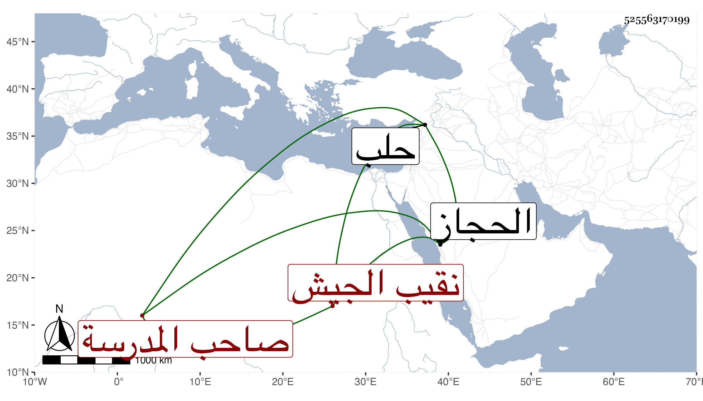

0902Sakhawi.DawLamic.ITO20230111-ara1.EIS1600.525563170199
Biography ID: 525563170199
ابن أبي الفرج الفخر عبد الغني صاحب المدرسة وناصر الدين محمد نقيب الجيش والشمس محمد بنو أبي الفرج ولهم أخوات ثلاثة هاجر وزينب وستيتة فأما فخر الدين فله عبد القادر استقر بعد أبيه ومحمد وأحمد وهما توأم والثلاثة أشقاء وعلي ومحمد هو والد الناصري محمد المدعو أمير حاج نقيب الجيش الآن وأحمد هو والد البدر محمد ابن بنت الملكي وربيب الشرف الأنصاري بل زوج ابنته وأما هاجر فزوجها أخوها السيد بركات صاحب الحجاز ثم فارقها قبل دخوله بها بعد إمهاره لها ألف مثقال وماتت بعيد التسعين وقد جازت التسعين وستيتة هي أم الزين عبد الرحمن بن الكويز وهي التي أرسل بها أخوها فخر الدين لقطيا فقتلت هناك لاتهامها وأما ناصر الدين أخو الفخر فله الشهاب أحمد المستقر بعده في نقابة الجيش ومات بحلب هو ورأس نوبته ابن المرضعة وأما شمس الدين فلم يعقب .
